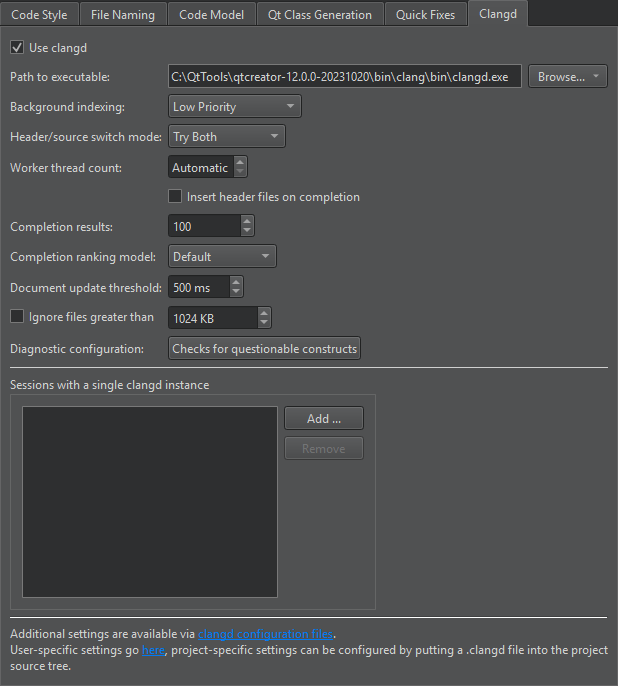
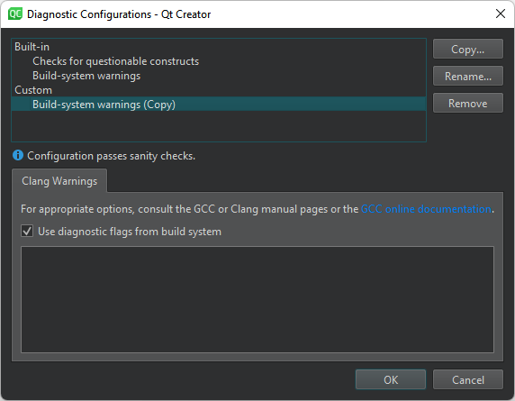

Clangd
The Clang project has libraries for parsing C language family source files and providing you with detailed diagnostics. The clangd index provides exact and complete results for services such as code completion.
To set preferences for clangd:
- Select Preferences > C++ > Clangd > Use clangd.

- In Path to executable, enter the path to clangd version 14, or later.
- In the Background indexing field, select Off to use a faster, but less accurate built-in indexer than the one used by default. You can set the indexing priority depending on whether the accuracy of results or speed is more important to you during global symbol searches.
- In Header/source switch mode, select the C/C++ backend for switching between header and source files. While the clangd implementation has more capabilities than the built-in code model, it tends to find false positives. Try Both uses clangd if the built-in code model does not find anything.
- By default, clangd attempts to use all unused cores. You can set a fixed number of cores to use in Worker thread count. Background indexing also uses this many worker threads.
- Set the number of Completion results if you regularly miss important results during code completion. Set it to 0 to remove the limit on the number of completion results. Setting this to 0 or a very high number can make code completion slow.
- In Completion ranking model, select the clangd model to use for ranking completion suggestions. This determines their order in the selection list. The Decision Forest model (Default) results from pre-trained machine learning and usually provides better results than the hand-crafted Heuristic model. Select the latter if the completion suggestions stray too much from your expectations for your code base.
- In Document update threshold, specify the amount of time Qt Creator waits before sending document changes to the server. If the document changes again while waiting, this timeout is reset.
- Select Ignore files greater than to make parsing faster by ignoring big files. Specify the maximum size of files to parse in the field next to the check box.
- The Diagnostic configuration field shows the Clang checks to perform. Click the value of the field to select and edit the checks to perform.
- Select Add to select sessions that should use a single clangd process for indexing.
Clang Checks
Click the value of the Diagnostic configuration field to open the Diagnostic Configurations dialog, where you can select and edit the checks to perform.

In addition to using the built-in checks, you can select Copy to create copies of them and edit the copies to fit your needs.
- Build-system warnings shows warnings as specified by the build system.
- Checks for questionable constructs combines the
-Walland-Wextrachecks for easily avoidable questionable constructions and some additional issues.
Clang checks begin with -W. Each check also has a negative version that begins with -Wno.
Keep in mind that some options turn on other options. For more information, see Options to Request or Suppress Warnings or the GCC or Clang manual pages.
See also Specify clangd settings, Clang Code Model, and Code Model.